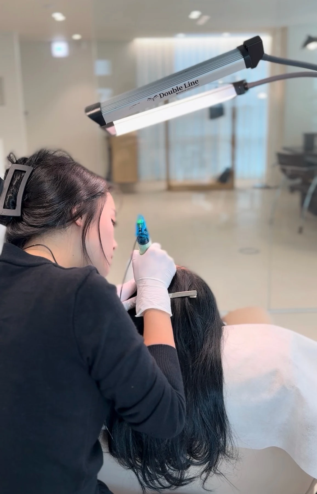
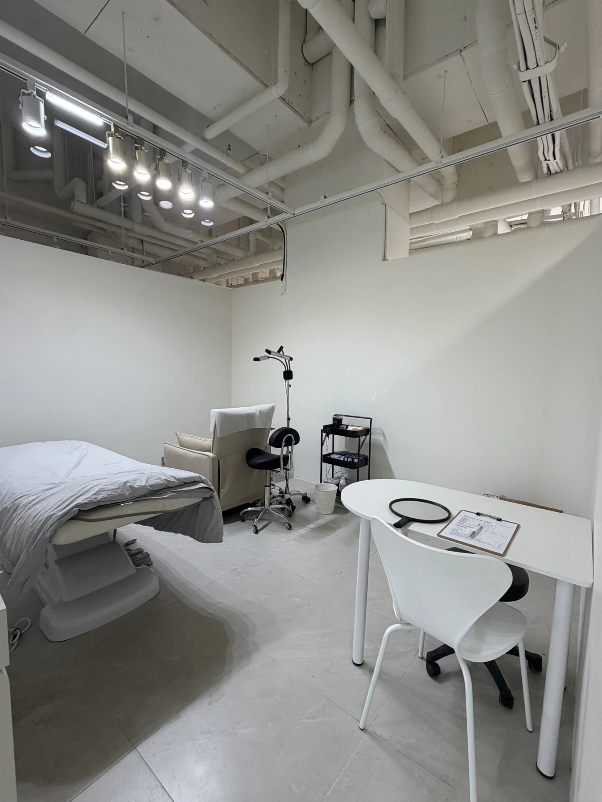

고민부터 듣는 상담
원하는 모습과 걱정되는 부분을
충분히 이야기합니다.

가르마의 폭도, 모발의 흐름도.
모두 다르니까요.
비어 보이는 곳을 무조건 채우지 않습니다. 가장 신경 쓰이는 부위와 원하는 분위기를 먼저 듣고, 기존 모발과 두피 상태에 어우러지는 표현을 고민합니다.
가능한 표현과 한계를 충분히 설명드린 뒤, 이해하고 납득한 선택을 하실 수 있도록 돕겠습니다.
내 고민부터 이야기하기 ↗원하는 모습과 걱정되는 부분을
충분히 이야기합니다.
기존 모발과 두피 상태를 살펴
어울리는 범위를 함께 정합니다.
한 번에 진하게 채우기보다
반응과 밀도를 확인하며 진행합니다.
가르마가 전보다 넓어 보여요.
↗사진 속 정수리가 유독 비쳐 보여요.
↗채우고 싶지만, 너무 진해질까 걱정돼요.
↗어디가 고민인지, 어떤 모습을 원하는지. 상담에서 하나씩 확인해보세요.
부위마다 다른 고민에 맞춰
밀도와 범위를 살펴봅니다.
1회차부터 3회차까지의 진행 사진입니다.
정수리 커버 시술 전후를 비교해보세요.
기존 모발과 어우러지는 헤어라인 표현입니다.
가르마 시술 전후를 한눈에 살펴보세요.
원본 사진에 표시된 회차별 변화를 확인하세요.
사진 속 전후 표시를 함께 확인하세요.
RE:DAAM SMP에서 제공한 실제 시술 사진입니다. 사진을 누르면 전체 이미지를 크게 볼 수 있습니다.
진행 회차와 전후 구분은 원본 사진의 표기를 확인해주세요. 촬영 조건과 개인 상태에 따라 표현과 경과는 다를 수 있습니다.
최초 1회차 시술일 기준 1년 이내
무료 리터치가 포함됩니다.
안녕하세요. RE:DAAM SMP 정예린 원장입니다.
자연스러움의 기준은 사람마다 다릅니다. 어느 부분이 신경 쓰이는지, 어떤 결과를 기대하는지 충분히 이야기 나누고 시술 방향을 함께 정합니다.
시술이 적합하지 않을 수도 있습니다. 무조건 권하기보다 현재 상태에서 가능한 표현과 한계를 솔직하게 설명드리겠습니다.
상담을 받아본 뒤
시술 여부를 결정하셔도 괜찮습니다.
카카오채널에서 고민 부위와 희망 상담 일정을 알려주세요.
방문 상담으로 상태를 살피고 범위·회차·비용을 안내합니다.
협의한 방향에 따라 두피 반응과 밀도를 확인하며 진행합니다.
시술 후 관리 방법과 리터치 조건을 상세하게 안내합니다.

두피에 미세한 점 형태로 색소를 표현해 비쳐 보이는 부위를 시각적으로 보완하는 방식입니다. 기존 모발과 두피 상태를 고려하며, 모발이 자라게 하는 시술이나 탈모 치료는 아닙니다.
기존 모발의 밀도와 방향, 두피 상태를 고려해 디자인하고 회차별로 표현을 조절합니다. 자연스러운 표현을 목표로 하지만 개인의 상태와 시술 조건에 따라 결과는 달라질 수 있습니다.
통증은 개인의 민감도와 시술 부위에 따라 다릅니다. 상담에서 궁금한 점을 충분히 나누고, 시술 중에도 상태를 확인하며 진행합니다.
일반적으로 3회에 걸쳐 진행하지만 두피 상태와 시술 범위에 따라 달라질 수 있습니다. 유지 정도도 피부 타입, 생활 습관, 사후 관리에 따라 차이가 있습니다. 필요한 회차와 포함 비용은 상담에서 안내드립니다.
아니요. 15만 원은 가르마 1회차 체험 가격입니다. 전체 시술 상품과 별도이며, 적용 부위와 후속 회차 비용, 전체 상품으로 진행할 때의 조건은 예약 전에 상담으로 확인해주세요.
최초 1회차 시술일로부터 1년 이내 무료 리터치가 포함된다는 안내를 기준으로 합니다. 적용 횟수와 범위, 예약 가능 시기는 상담에서 확인해주세요.
색소 번짐, 점의 퍼짐, 부자연스러운 밀도 표현 등이 발생할 수 있습니다. 개인의 두피 상태와 시술 조건에 따라 차이가 있으며, 상담에서 가능한 표현과 주의할 점을 안내드립니다.
네. 두피 상태와 고민 부위를 살펴보고 설명을 들으신 뒤 결정하셔도 괜찮습니다. 상담 문의만으로 예약이나 시술이 확정되지는 않으며, 매장과 일정을 협의한 후 확정됩니다.